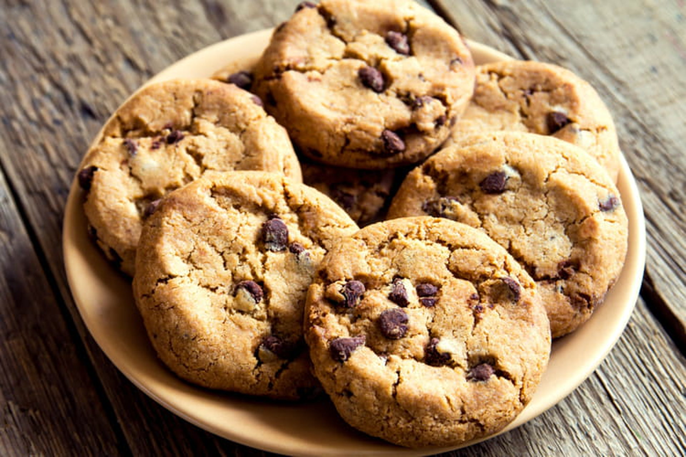

Cookies

Description
Cookies are small, sweet baked treats with a soft or crispy texture,
made from a dough of flour, butter, sugar, and eggs.
They often include ingredients like chocolate
chips, nuts, or raisins, offering a rich, buttery flavor and a delightful aroma.
Ingrediants
- All-purpose flour
- Butter (softened)
- Granulated sugar
- Brown sugar
- Eggs
- Vanilla extract
- Baking soda
- Salt
- Chocolate chips
- Baking powder
Steps
- Preheat the oven to 180°C (350°F).
- Mix the softened butter, granulated sugar, and brown sugar until creamy.
- Beat in the eggs and vanilla extract.
- In a separate bowl, combine the flour, baking soda, baking powder, and salt.
- Gradually add the dry ingredients to the wet mixture and stir until combined.
- Fold in the chocolate chips.
- Scoop spoonfuls of dough onto a lined baking tray, leaving space between each cookie.
- Bake for 10–12 minutes, or until the edges are golden brown.
- Remove the cookies from the oven and let them cool on the tray for a few minutes.
- Transfer the cookies to a wire rack, let them cool completely, and enjoy!
click here